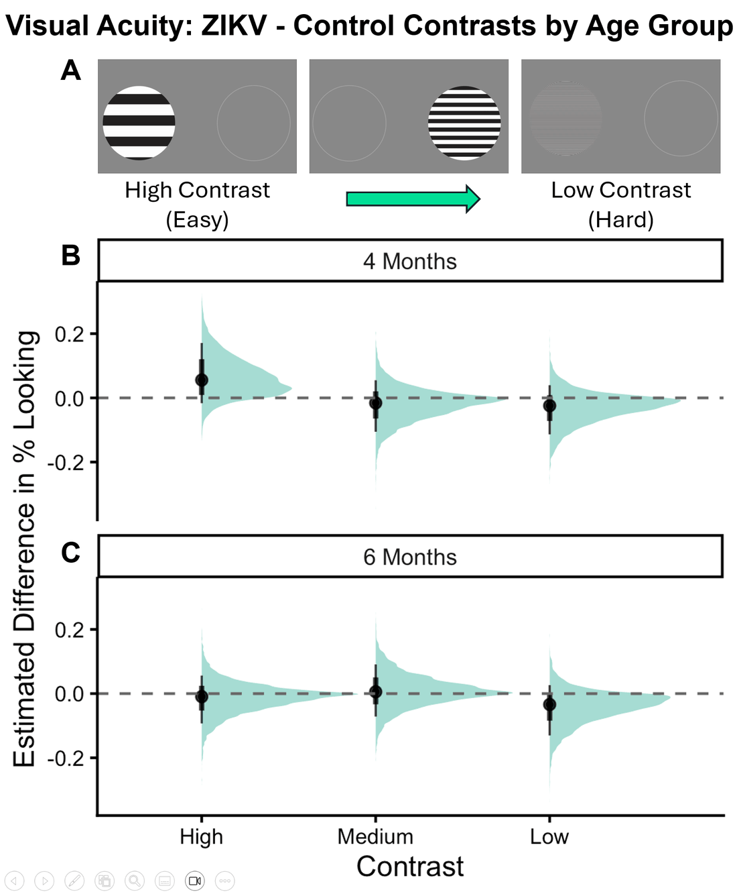

An infection after birth
Zika virus is known for what it does before birth. During the epidemic of 2015 and 2016, infection in pregnancy was linked to microcephaly and other birth defects. Much less is known about infection after birth, even though children account for 10 to 31 percent of Zika infections and the brain grows rapidly through the first two years of life.
That question is hard to answer in children. You cannot choose who gets infected or when, and a mild infection often goes unnoticed. Our lab studies it using infant rhesus macaque models. In this study, 12 infants were infected at about five weeks of age. The virus peaked in the blood within three days and was gone within three weeks. Then we watched what happened to development over the next eight months.
- Weeks 2–9Weekly exams of reflexes, attention and temperament
- Week 5Zika infection, or a control treatment
- Month 3Brain MRI
- Months 4 and 6Visual acuity by eye tracking
- Month 5Response to a brief stressor
- Months 7–8Attachment to the caregiver
Twenty-four animals
The statistics of a study like this are shaped by one number. There are 24 animals. Split them by infection and you have 12 against 12. Split again by sex and you have 6. Split the controls by type and you have 3. Every one of those animals matters, and there will not be more of them.
A study this small cannot afford to waste information, and it cannot afford to fool itself.
Those two needs pull in opposite directions, and most of my decisions were about holding both.
- Report a range, never a verdict. Every model is Bayesian (written in R with brms). Each result is an estimate with an 89% interval and the probability that the effect goes in the stated direction. There are no p-values in the paper and nothing is called “significant.”
- Borrow from the past, where the past exists. The lab had measured healthy infant macaques before, in earlier studies. Ignoring that would be waste. So for the control animals, each model starts from what those studies found, weighted by their size, and lets the new data pull it. For infected animals there was nothing comparable to borrow, so the models start with almost no opinion.
- Fit the model to the measurement. Exam scores on an ordered scale get an ordinal model. Counts of behaviors get a negative binomial model. Percent of time looking gets a beta regression, with missing values estimated inside the model. Brain volumes get a linear model adjusted for overall brain size, so a region is not called small merely because the whole brain is.
Two kinds of control
An infection does two things at once. The virus acts on the body, and the body's immune system reacts. Either could alter a developing brain. To separate them, half of the controls were left alone, and the other half received a synthetic molecule that sets off the immune reaction to a virus without any virus.
The weekly exams show why that matters. Two things worsened after infection, and the two controls split them apart.

Attention to sights and sounds (third row) fell in the infected infants. It fell about as much in the immune-stimulated controls. That points to the immune reaction, not the virus.
Emotional regulation (bottom row: how irritable an infant is, and how hard to console) worsened only in the infected infants, week after week. The immune-stimulated controls showed no such change. That one belongs to the virus.
What the animals showed
Across eight months, the picture that emerged was of an infection that leaves the basics intact and changes how emotion is regulated.
- In the first weeks, poorer emotional regulation, beginning at the first exam after infection and growing through week 9.
- At five months, more hostile behavior, and in an unusual place: during the least threatening parts of the stress test, which is not typical for this test.
- At seven to eight months, attachment to the caregiver was as strong as in controls, but distress at being kept apart was blunted. Infected males screamed less. (I followed that thread into the sound of the calls themselves: What a scream carries.)
- In the brain at three months, more cerebrospinal fluid, most clearly in females, sitting in the space around the brain and not in its ventricles. Males had a larger amygdala. Females had a smaller temporal-limbic cortex.


One result was a clear absence. The early drop in attention raised the worry of lasting damage to vision. We tested visual acuity at four and six months, at three levels of difficulty, and found no difference at either age. I gave that null result the same care as the positive ones, because a careful “no” is worth as much to a parent or a doctor as a “yes.”

Where the checks changed the story
The first version of the analysis was not the last. Reviewers pushed, I pushed, and four checks shaped what the paper now says.
- An effect before its cause. My main model described each group difference as a straight line over age. For emotional regulation, that line crossed into “credible” at four weeks, a week before anyone was infected. A virus cannot do that. I refit the model with every week estimated separately. The virus-specific difference appeared only after infection; the early signal reflected a brief dip in the untreated controls, not anything particular to the infected group. The same check found that a small difference in reflexes really was there before infection, so the paper now calls it what it is: variation between animals, not a consequence.
- Pooled controls. Most analyses compare infected animals with both kinds of control together. Is that fair? I refit everything with the three groups apart. The main findings held against each control group separately. Two did not hold against both (reductions in visual and auditory cortex), and the paper now treats those with caution.
- “Different in males” is a claim about a difference. An effect that is credible in one sex and not in the other does not show that the sexes differ. That needs its own test. I estimated the difference between the sexes directly: strong for some regions, weaker for others, and all labeled preliminary, because six animals per subgroup cannot carry more.
- Does more virus mean more harm? If the virus causes these changes, animals that carried more of it might be expected to show more. Within the 12 infected animals, I tested that. A few associations crossed the threshold, but each one depended on whether a single animal with an unusually low viral load was included. The paper reports the analysis as exploratory and the answer as a null, and says why a null among 12 animals settles little.
The shape of a model can create a result. The only defense is to change the shape and see whether the result stays.
What I would still not claim
The brain was scanned at three months and the behaviors were measured at other ages, so the study cannot tie a particular brain change to a particular behavior. The explanations offered for the extra fluid are inferences from images, not measurements of how the fluid moves. The infants were raised in a nursery, not by their mothers. And eight months is early. Whether these changes fade, persist or grow is a question for longer follow-up.
Open by default
All of the analysis code and the data behind it are public: nine R scripts, in the order the analyses appear in the paper, with the priors and the sensitivity analyses. Anyone can rerun it, and anyone can disagree with a choice I made and see what changes.
Code and data on GitHubPreprint on bioRxiv
Status. Posted as a preprint in March 2026 and in revision at Communications Biology. This page follows the revised analysis, so a few details differ from the preprint.
With Jessica Raper (senior author), Ann Chahroudi and 18 other colleagues; the full author list is on the preprint. Funded by the National Institute of Neurological Disorders and Stroke (R01 NS120182), the NIH Office of the Director (P51 OD011132) and the other awards listed in the paper.